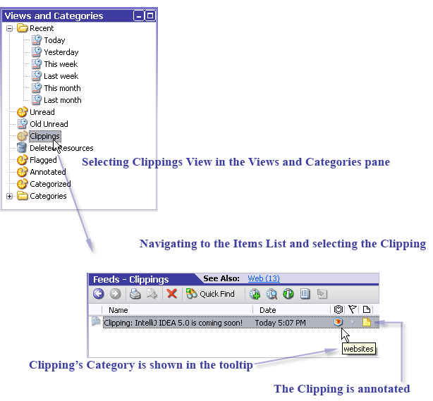
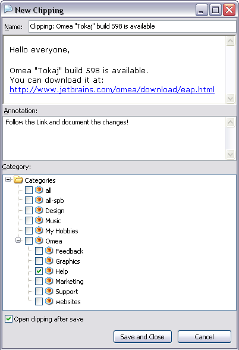
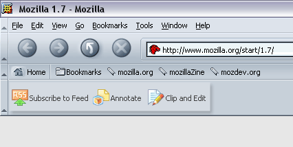
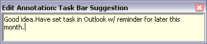
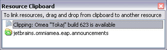

Working with Clippings
Clippings in Omea ReaderOmea Pro are analogous to clippings from print media: some meaningful excerpt(s) form the larger whole that you “clip” — cut, save, and refer to later reference.
You can create Clippings from any type of resource. Clippings themselves are a type of resource, and you can organize and search them the same way as other types of resources you work with in Omea Reader Omea Pro.
For example, you might find an article on a web page that has a paragraph you want to quote in a report you are researching before writing it. You can create a Clipping from that paragraph, annotate it if you wish, and file it in your Categories and/or associate it with a Workspace. You can optionally create a View that isolates one or more clippings you need for your report as by default, all the Clippings you create are in the Clippings default view.
Creating a Clipping in Omea
To create a Clipping:
- Locate and select the resource containing the text you want to "clip".
- In the Item Viewer, select the text you want the new Clipping to contain.
- Right-click on the selected text and choose Create
Clipping on the context menu or click Clip Selection on the resource-specific toolbar. (Alternatively, you can use Actions
| Create Clipping from Selection on the main menu.)
The New Clipping dialog appears. - Type a name for the Clipping in the Name field (the default name is the item’s subject line).
- Optionally enter your own notes in the Annotation field (if you want to annotate the Clipping).
- Select a Category for the Clipping by checking the box near the Category name.
- Check Open clipping after save option, if you want to preview the Clipping in the Omea's Preview window right after you save the Clipping.
- Click Save and Close.
The Clipping appears in the Clippings View of the appropriate tab; if it has annotation and Category, they are displayed in appropriate columns.


The New Clipping window
Viewing Clippings
Now you can see all Clippings if you select Views and Categories pane in all resource tabs except Contacts and Tasks and navigate to the Clippings View.
If you want to access all your Clippings at once, click the the All Resources tab and navigate to the Clippings View.
When you select other resource tabs you see only the Clippings from resources of the selected type. For example, if you have created some Clipping from a bookmarked web page, it appears in the list when you select the Web tab and then click on Clippings View in the Views and Categories pane.
Viewing Clippings as Newspaper (when working with feeds)
You can now view the Clippings which you have made from the feed posts as Newspaper (see Newspaper View for feeds). Please note that it works only in Feeds tab.
To turn the Newspaper View on for Clippings, select Clippings view in the Views and Categories pane and click the Newspaper View icon on the Items List toolbar.
In newspaper view, the Items List displays not only the titles of Clippings, but also Clippings' text, annotations, and flags as well.
Once you turn this option on, you can customize the view of your newspaper (use filters, define number of Clippings per page, use navigation buttons). For details, see this picture.
To turn the Newspaper View off, click the Newspaper View icon again.
Editing Clippings
To open a Clipping and edit it:
- Find the Clipping (click the appropriate resource tab, navigate to the Clippings View and select the desired Clipping in the Items List).
- Right-click the Clipping and select Open.
- Edit the text in the Name and the Annotation fields, and select the Category for the Clipping if necessary.
- Click Save and Close.
Switching between a Clipping and its Source
Each Clipping contains a link to its source, and vice versa. To view the source of the Clipping, click the Source link on the Links Bar (or in the Links and Actions panel).
To switch back from the source document to the Clipping, click the Clipping link in the source document’s Links Bar (or Links and Actions panel).
Creating Clippings Using Browser Plugins
Now you can create Clippings directly from the web page you are currently browsing in Mozilla©, Firefox© and Internet Explorer©. After these plugins are installed (this happens when you install Omea), a toolbar appears in these browsers.

A toolbar in Mozilla© (it looks the same in Firefox© and Internet Explorer©)
Using this toolbar you can create Clippings and edit their properties ( name, Category or annotation) by pressing Clip and Edit or just save the Clippings without editing (by pressing Clip and Save).
For more information, see working with Omea Connector Plugin (describes how to work with the plugin in Mozilla© and Firefox©) and working with Internet Explorer Add-on .
Tips and Tricks
Clippings and Categories
You can optionally file Clippings in your existing Categories. If you have a lot of Clippings you might create a filing system of sub-Categories.
The thing to remember about Categories is that it's up to you to file your Clippings in them. For more information on Categories, see Organizing Using Categories.
Annotating a Clipping
You can annotate the Clipping (create a note for it) if you haven't done it yet (see Creating a Clipping ).
To annotate the Clipping:
- Find and open the Clipping or create a new Clipping.
- Open the Clipping in the Items List (if this column is not visible, bring it to view using the Configure Columns dialog), click button in the Annotation column or click Annotate Resource in
the Links and Actions panel.
A window for editing the annotation appears. - Type the Annotation contents.
The Annotation icon appears in the Annotation column
of the Clipping.
appears in the Annotation column
of the Clipping.

Edit Annotation window
Marking Clipping with Flags
You can also add a flag to you Clipping to remind yourself and other people to follow up on an issue or to indicate a request for someone else.
To create a flag for the Clipping:
- Find and open the Clipping or create a new Clipping.
- Click button near the Clipping name in the Flag column. If this column is not visible, bring it to view using the Configure Columns dialog.
- Select the Flag With and the flag color.
The Clipping will be marked with flag which is in the Flag column.
Linking a Clipping with Other Resources
You can link your Clipping to some other available resources.
To link the Clipping with other resources:
- In the Links and Actions panel, click Add Link… or from the View menu, select Resource Clipboard.
The Resource Clipboard window appears. - Drag a resource, for example, contact of a person
to whom you are going to send the Clipping and drop it into this window.
Your Clipping will now be linked with the resource you have selected.

Resource Clipboard window
Saving a Clipping to File
You can save the Clippings you have created to an HTML file to access and manage them in the future. You can do it for example to view some Clipping (extract) you have created from the bookmarked web-page the contents of which you find meaningful.
To save your Clipping:
- Locate the Clipping and select it in the Items List.
- Click the Save to file link in the Links and Actions pane (if this pane is not visible, from the View menu, select Links pane).
- Specify the file location and name and click Save button.
To open the saved Clipping, find your Clipping in the file system and open it using a browser or other application.
Sharing Clippings
You can send Clippings you have created by e-mail to share the information they contain with other people.
To send a Clipping by e-mail:
- Locate the Clipping and select it in the Items List.
- Right-click on the selected Clipping (or anywhere in the Item Viewer) and choose Send by Mail on the context menu. A new Outlook message appears with the Clipping name in the Subject line and the Clipping text in the message body.
- Specify the recipient(s) and add any comments as you normally do, and send the message.